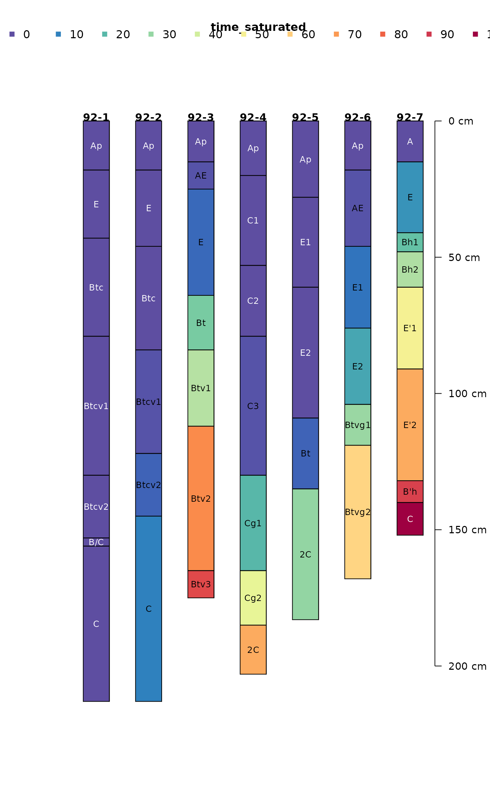
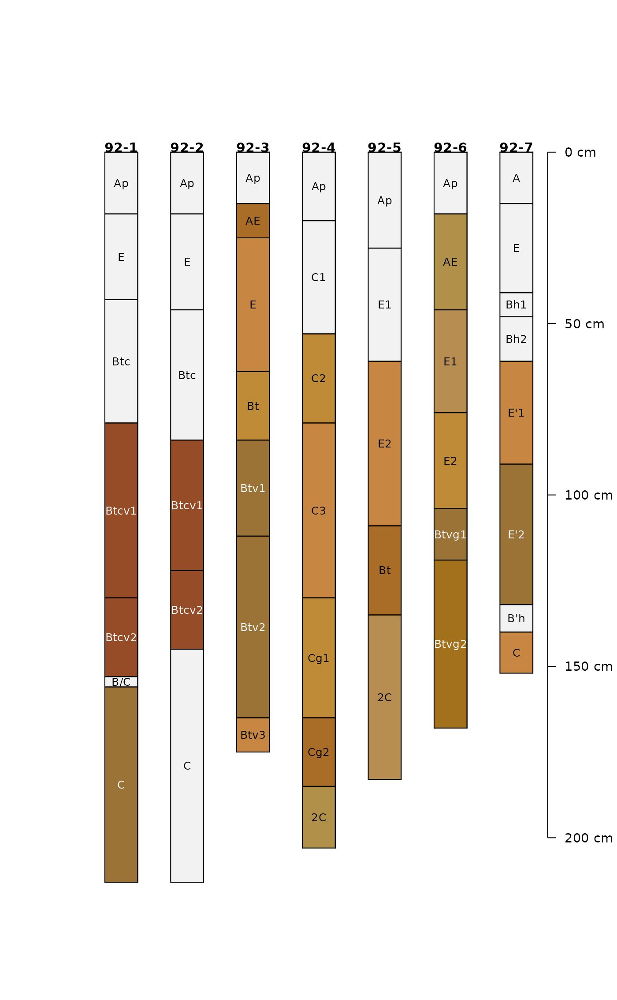
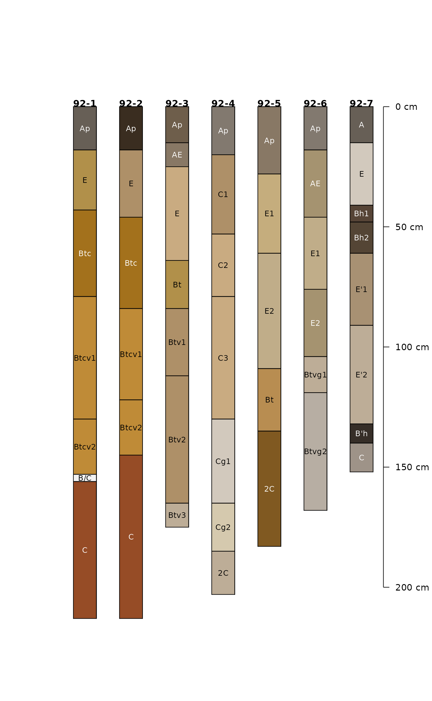
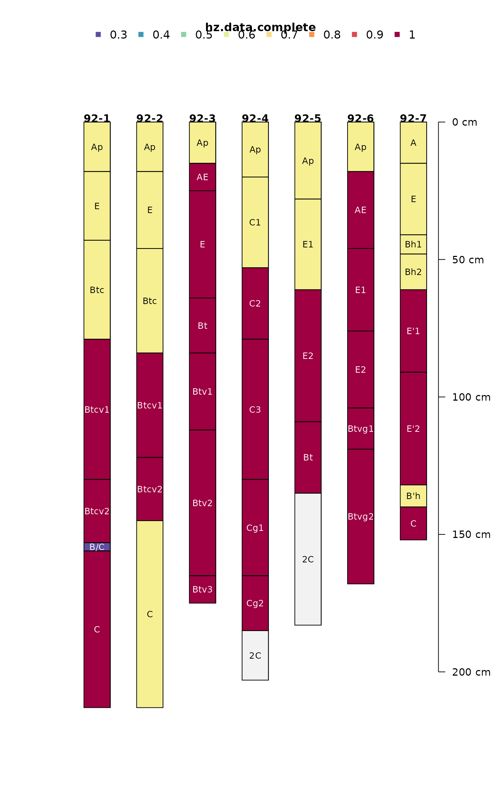
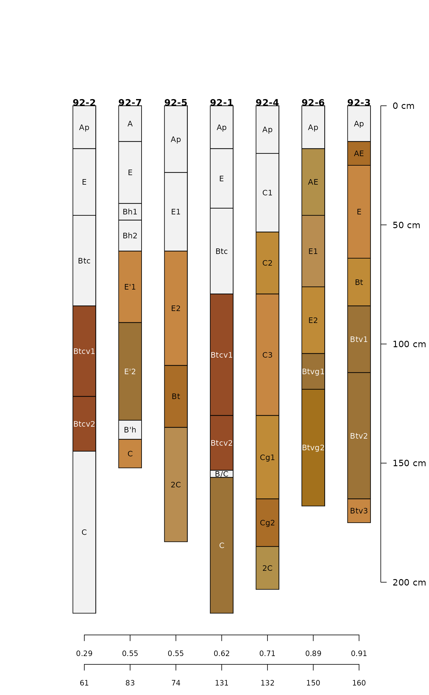

Evaluate missing data within a SoilProfileCollection object
Data completeness is evaluated by profile or by horizon. Profile-level evaluation is based on the thickness of horizons (method = absolute) with complete horizon-level attributes (vars), optionally divided by the total thickness (method = relative). The REGEX pattern (p) is used to filter non-soil horizons from the calculation.
Usage
evalMissingData(
x,
vars,
name = hzdesgnname(x),
p = "Cr|R|Cd",
method = c("relative", "absolute", "horizon")
)Arguments
- x
SoilProfileCollectionobject- vars
character vector, naming horizon-level attributes in
x- name
character, the name of a horizon-level attribute where horizon designations are stored, defaults to
hzdesgnname(x)- p
character, REGEX pattern used to match non-soil horizons
- method
character, one of: 'relative' (proportion of total) depth, 'absolute' depth, or 'horizon' (fraction not-missing by horizon)
Value
A vector values ranging from 0 to 1 (method = 'relative') or 0 to maximum depth in specified depth units (method = 'absolute') representing the quantity of non-missing data (as specified in vars) for each profile. When method = 'horizon' a non-missing data fraction is returned for each horizon.
Examples
# example data
data("jacobs2000")
# fully populated
plotSPC(jacobs2000, name.style = 'center-center',
cex.names = 0.8, color = 'time_saturated')

# missing some data
plotSPC(jacobs2000, name.style = 'center-center',
cex.names = 0.8, color = 'concentration_color')

# very nearly complete
plotSPC(jacobs2000, name.style = 'center-center',
cex.names = 0.8, color = 'matrix_color')

# variables to consider
v <- c('time_saturated', 'concentration_color', 'matrix_color')
# compute data completeness by profile
# ignore 2C horizons
jacobs2000$data.complete <- evalMissingData(
jacobs2000,
vars = v,
method = 'relative',
p = '2C'
)
jacobs2000$data.complete.abs <- evalMissingData(
jacobs2000,
vars = v,
method = 'absolute',
p = '2C'
)
# compute data completeness by horizon
# ignore 2C horizons
jacobs2000$hz.data.complete <- evalMissingData(
jacobs2000,
vars = v,
method = 'horizon',
p = '2C'
)
# "fraction complete" by horizon
plotSPC(
jacobs2000, name.style = 'center-center',
cex.names = 0.8, color = 'hz.data.complete'
)

# rank on profile completeness
new.order <- order(jacobs2000$data.complete)
# plot along data completeness ranking
plotSPC(
jacobs2000, name.style = 'center-center',
cex.names = 0.8, color = 'concentration_color',
plot.order = new.order
)
# add relative completeness axis
# note re-ordering of axis labels
axis(
side = 1, at = 1:length(jacobs2000),
labels = round(jacobs2000$data.complete[new.order], 2),
line = 0, cex.axis = 0.75
)
# add absolute completeness (cm)
axis(
side = 1, at = 1:length(jacobs2000),
labels = jacobs2000$data.complete.abs[new.order],
line = 2.5, cex.axis=0.75
)
